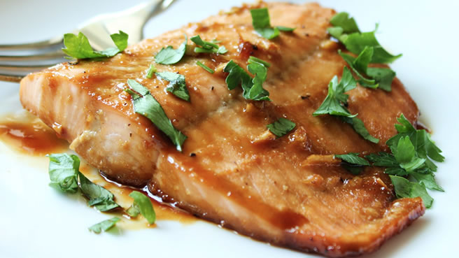
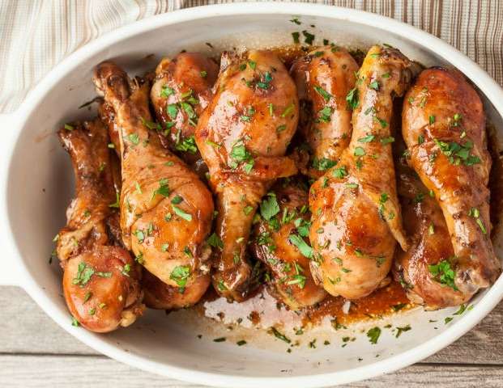

Cooking Food
I love cooking my own food.
I always keep experimenting by tring to cook something new
I love the taste of my mom made food and so am always in kitchen when she is preparing something new
Cooking is always fun
 Watching Videos
I watch many videos on youtube
I love watching standup comedians like Russel Peter, Vir Das, Gursimran Khamba and many more
There is one show on youtube called BB ke vines which i love the most
I also love watching cooking videos
There are many shows which i also watch during my spare time